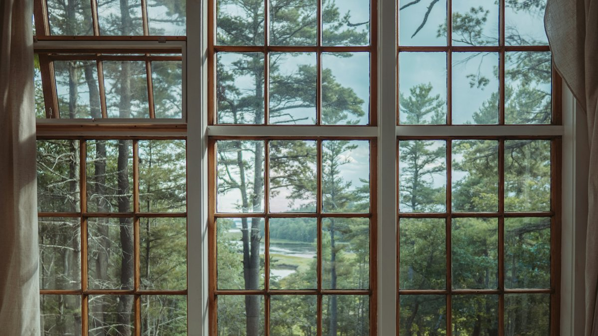
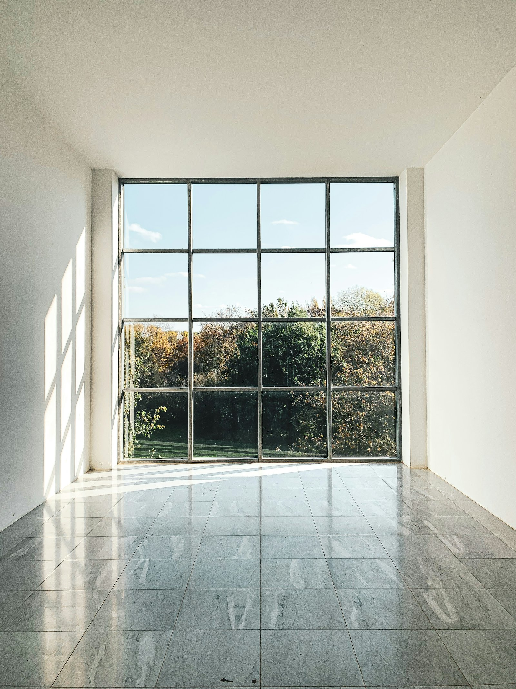

EEureka Infissi

Chi cerca infissi oggi li confronta online prima di passare in showroom. Qui può provare la finestra sulla propria stanza: materiale, vetro, luce dell'ora che preferisce. Poi prenota la visita in Via Livio Bassi con le idee già chiare.

Scegli materiale e vetro, poi sposta l'ora: la luce sul pavimento cambia come cambia a Trapani in una giornata di sole. A destra, quello che si sente e quanto si risparmia, spiegato senza schede tecniche.
Valori indicativi per una finestra a due ante. Il dato vero dipende da profilo, vetro e posa: lo misura il sopralluogo.
Ogni cantiere passa da cinque tappe. Raccontate una alla volta, diventano la prova che sul profilo mancava: lavori veri, a Trapani, fatti da voi.
Misure, esposizione, vecchi infissi da togliere.
Storia: «oggi a Erice, finestre del 1970»Materiale, colore, maniglie, zanzariere MV Line.
Carosello: tre finiture a confrontoDisegno, preventivo, tempi di produzione.
Post: cosa c'è dentro un preventivoSmontaggio, montaggio, sigillatura.
Reel: una finestra in 30 secondiProva di chiusura, istruzioni, garanzia.
Prima e dopo, con la voce del clienteSu Instagram e Facebook scrive la famiglia che rifà casa. Su LinkedIn leggono architetti, geometri e imprese che scelgono il fornitore per un cantiere. Stesso lavoro, tre modi di raccontarlo.

Chi arriva con la stanza già provata sa cosa chiedere. Il messaggio parte su WhatsApp al responsabile commerciale con stanza, materiale e giorno: niente telefonate perse durante la posa.
Pausa dalle 13 alle 15. Via Livio Bassi 43, 91100 Trapani.